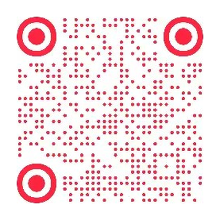

04 / 个人项目 · Android 开源工具
连点器
把重复操作，变成可控的动作。
面向 Android 新手的自动点击工具，将动作编辑、屏幕点位和悬浮执行连接起来，让用户看得见脚本，也能随时找回控制入口。
操作流程示意
01开启权限→02编辑动作→03悬浮执行
点击 / 长按 / 滑动 · 顺序 / 同时执行
隐藏控制器 → 音量键找回
先理解操作，再组织功能。
重复点击不只需要一个开始按钮。用户还要定义动作、调整点位与间隔，并在切换应用后继续控制执行。围绕这条路径，产品将权限准备、脚本编辑与悬浮控制分开呈现。
围绕一条完整的执行路径。
权限与兼容引导
说明悬浮窗和无障碍权限的用途，并针对常见厂商系统提供设置提示。
可配置的动作
支持点击、长按和滑动；脚本可新建、编辑、删除，并提供常用预设。
直接操控点位
通过可拖动的悬浮控制器与屏幕点位组织执行，支持顺序执行与多点同时点击。
隐藏后仍能找回
录屏隐藏模式收起悬浮窗和点位；长按实体音量键恢复控制入口。
把视觉与控制感放在一起。
使用 Jetpack Compose 构建界面，围绕液态玻璃底栏、横滑分段选择与弹性反馈组织交互；提供跟随系统、浅色与深黑主题。动作既支持高速重复，也支持以秒为间隔执行。
可检查的开源交付。
仓库提供 Kotlin 源码与 Gradle 构建入口，采用 Apache 2.0 许可证。Android 无障碍服务负责手势执行，Backdrop 提供玻璃渲染，Kotlin Coroutines 组织异步任务。
当前范围与依赖
当前仓库标注版本 1.0.30，要求 Android 10 及以上。脚本和设置在本地保存；无账号和云端上传。执行依赖用户授予的无障碍与悬浮窗权限，厂商系统行为可能不同。
这里展示已实现功能与产品路径，未将开源发布表述为用户增长或商业效果。上方为操作流程示意。
在小红书，看它怎么用。
连点器的使用演示与版本更新，都发在这个账号上；遇到问题也可以在这里问。
